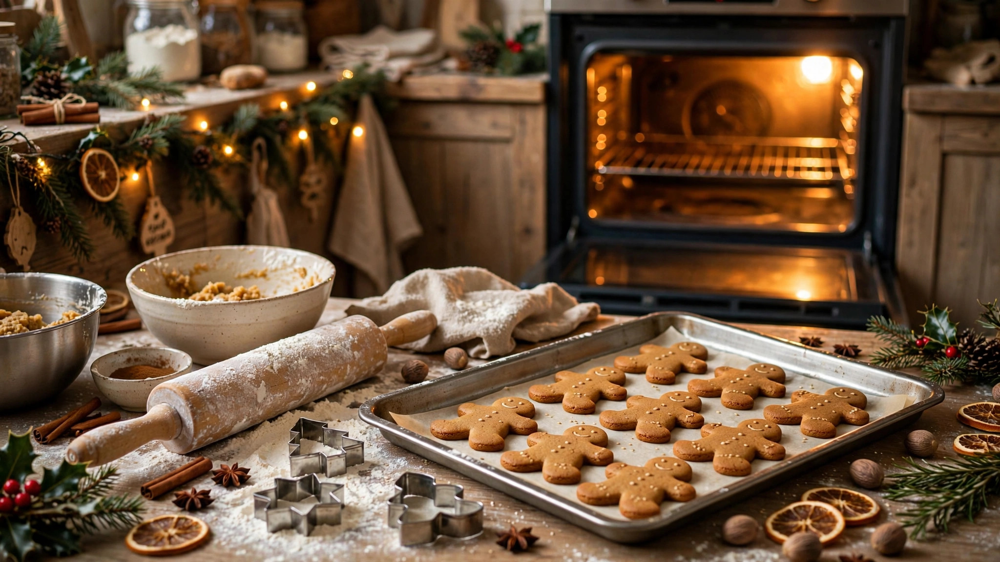

Holiday Baking 2026: Essential Tools and Tips

December is baking season, and the difference between stressful and joyful holiday baking often comes down to having the right tools and a few pro tricks. This 2026 guide to holiday baking essentials covers the must-have equipment, pantry staples to stock, and troubleshooting tips for perfect cookies, cakes and breads all season long.
Must-Have Baking Tools
A heavy-duty stand mixer (or strong hand mixer), rimmed baking sheets, silicone mats, a digital kitchen scale, and an oven thermometer top the list. Cookie scoops give uniform shapes; a rolling pin with thickness rings guarantees even cookies. You do not need everything — but these workhorses earn their cabinet space.
Pantry Staples to Stock
All-purpose flour, granulated and brown sugar, powdered sugar, baking soda and powder, vanilla extract, cinnamon, ginger, cloves, nutmeg, cocoa powder, chocolate chips, and molasses. Stock butter when it goes on sale in November and freeze it — you will use pounds of it.
Mise en place saves December: measure and line up all ingredients before you start mixing. Holiday baking goes wrong most often when someone is frantically searching for baking powder mid-recipe.
Pro Tips for Perfect Results
Weigh flour instead of scooping for accuracy. Chill cookie dough — it prevents spreading and deepens flavor. Rotate pans halfway through baking. Cool completely before decorating or storing. And always, always preheat fully; an oven thermometer reveals most ovens lie by 25 degrees.
Troubleshooting Common Issues
Flat cookies: butter too warm or too little flour. Dry cake: overbaked — check 5 minutes early. Cracked cheesecake: water bath and no peeking. Soggy bottoms: bake pies on a preheated sheet pan.
Keep a baking log: jot down what you made, tweaks, and family ratings. Next December you will know exactly which recipes deserve a repeat and which to retire.
Shop: Baking Tools
Mixers, cookie cutters, decorating kits and pantry helpers.

Prices shown at the time of publishing and can change.
Frequently Asked Questions
What is the most important holiday baking tool?
A digital kitchen scale — it improves accuracy more than any other single tool, especially for cookies and bread.
How do I keep baked goods fresh for gifting?
Cool completely, layer with parchment in airtight tins, and include a note with the bake date. Most cookies keep 1 to 2 weeks.
Can I freeze cookie dough?
Yes — scoop into balls, freeze on a tray, then bag. Bake straight from frozen, adding 1 to 2 minutes.
Why did my cookies turn out hard?
Usually overbaking or too much flour. Pull cookies when edges are set but centers look slightly underdone — they finish on the hot pan.
Conclusion
Stock the staples, trust the scale, and remember that slightly imperfect homemade treats beat perfect store-bought ones every time. Tie them with ribbon, share widely, and savor the sweetest season.